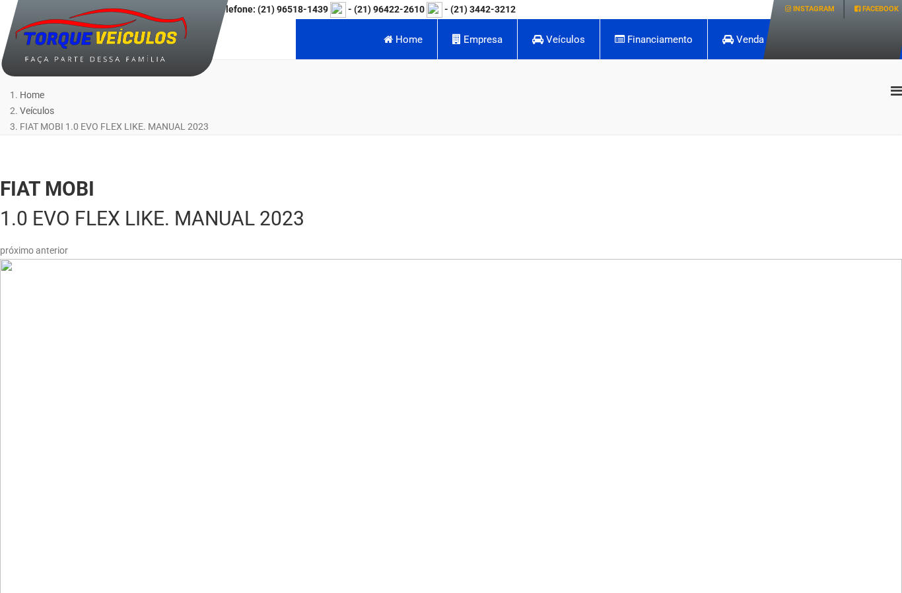
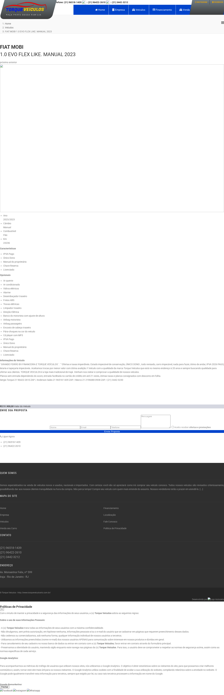

Sistema de Investigação de Marca e Identidade Online
https://www.torqueveiculosrio.com.br/Veiculo/mobi-1.0-evo-flex-like.-manual-flex-2023/826506/detalhes
Prioridade: MEDIUM · Cenário: B_AMBIGUOUS_COMMUNICATION · Revisão humana: PENDING
A loja de veículos promove suas ofertas acoplando a marca histórica 'BV Financeira' à sua própria denominação comercial ('GRANDE FEIRÃO BV FINANCEIRA E TORQUE VEÍCULOS'), sugerindo parceria ou feirão conjunto. Contudo, não esclarece a natureza da relação jurídica nem apresenta a declaração formal de correspondente bancário, além de omitir o CNPJ da empresa, caracterizando comunicação ambígua com necessidade de revisão. [Revisor: CONFIRM] A página pertence a uma revendedora de veículos ('Torque Veículos') que divulga campanha comercial acoplando seu nome à marca 'BV Financeira' ('GRANDE FEIRÃO BV FINANCEIRA E TORQUE VEÍCULOS' em E-TXT-003). A entidade atua no segmento alvo de correspondentes bancários, mas omite CNPJ, razão social e declarações regulatórias de correspondente bancário e ouvidoria, configurando parceria com vínculo ambíguo/não esclarecido ao consumidor. A classificação REVIEW_REQUIRED com prioridade MEDIUM se sustenta.


| Ref | Tipo | Local | Conteúdo |
|---|---|---|---|
| E-URL | domain | url | URL final: https://www.torqueveiculosrio.com.br/Veiculo/mobi-1.0-evo-flex-like.-manual-flex-2023/826506/detalhes (domínio: www.torqueveiculosrio.com.br) |
| E-DISC-001 | text | search_index | Índice de busca (grounding): torqueveiculosrio.com.br — **URL:** `https://torqueveiculosrio.com.br` | **Uso da Marca:** Utiliza no título descritivo do estoque a chamada: *"GRANDE FEIRÃO BV FINANCEIRA E TORQUE VEÍCULOS - Ofertas e taxas imperdíveis"* acoplado a simulador de proposta de financiamento online | Embora informe o nome fantasia ("Torque Veículos"), telefone e bairro (Irajá/RJ), a página omite a razão social completa, o CNPJ e a declaração de que atua como correspondente da instituição autorizada |
| E-SHOT-VIEWPORT | screenshot | viewport | evidence/C2292f06e04/attempt-1/viewport.png (sha256 feb8860d0d297de7…) |
| E-SHOT-FULL | screenshot | page | evidence/C2292f06e04/attempt-1/fullpage.png (sha256 96941dae343f2091…) |
| E-TITLE | title | head | Torque Veiculos: FIAT MOBI 2023 - 1.0 EVO FLEX LIKE. MANUAL - R$ 51.900,00 |
| E-META-1 | meta | head | description: Tradicional agência de revenda de veículos. Venha em nossa loja e saia de carro novo no mesmo dia |
| E-META-2 | meta | head | author: AutoCerto Tecnologia |
| E-HEAD-1 | heading | page | FIAT MOBI 1.0 EVO FLEX LIKE. MANUAL 2023 |
| E-HDR | text | header | Telefone: (21) 96518-1439 - (21) 96422-2610 - (21) 3442-3212 INSTAGRAM FACEBOOK Home Empresa Veículos Financiamento Venda seu Carro Contato |
| E-FOLD | text | viewport (acima da dobra) | Telefone: (21) 96518-1439 - (21) 96422-2610 - (21) 3442-3212 Instagram Facebook Home Empresa Veículos Financiamento Venda seu Carro Contato Home Veículos FIAT MOBI 1.0 EVO FLEX LIKE. MANUAL 2023 FIAT MOBI 1.0 EVO FLEX LIKE. MANUAL 2023 próximo anterior |
| E-FTR | text | footer | QUEM SOMOS Somos especializados na venda de veículos novos e usados, nacionais e importados. Com certeza você não só apreciará como irá comprar seu veículo conosco. Todos nossos veículos são revisados criteriosamente, possibilitando dar aos nossos clientes tranquilidade na hora da compra. Não perca tempo! Compre seu veículo com quem mais entende do assunto. Nossos vendedores terão o prazer em atendê-lo. [...] MAPA DO SITE Home Empresa Veículos Venda seu Carro Financiamento Localização Fale Conosco Politica de Privacidade CONTATO (21) 96518-1439 (21) 96422-2610 (21) 3442-3212 ENDEREÇO Av. Monsenhor Felix, nº 599 Iraja - Rio de Janeiro - RJ © Torque Veiculos - http://www.torqueveiculosrio.com.br/ Desenvolvido por |
| E-NAV | nav | header | <https://api.whatsapp.com/send?phone=+5521965181439&text=Ola> | <https://api.whatsapp.com/send?phone=+5521964222610&text=Ola> | INSTAGRAM <https://www.instagram.com/torque_veiculosrj/> | FACEBOOK <https://www.facebook.com/TorqueVeiculosRio.com.br> | Home <https://www.torqueveiculosrio.com.br/> | Empresa <https://www.torqueveiculosrio.com.br/Empresa> | Veículos <https://www.torqueveiculosrio.com.br/Veiculos> | Financiamento <https://www.torqueveiculosrio.com.br/Financiamento> | Venda seu Carro <https://www.torqueveiculosrio.com.br/VendaSeuCarro> | Contato <https://www.torqueveiculosrio.com.br/Contato> | <https://www.torqueveiculosrio.com.br/Veiculo/mobi-1.0-evo-flex-like.-manual-flex-2023/826506/detalhes#> |
| E-CTA-1 | cta | page | Enviar Proposta |
| E-CTA-2 | cta | page | × |
| E-CTA-3 | cta | page | Fechar |
| E-CONTACT-1 | contact | header | <https://api.whatsapp.com/send?phone=+5521965181439&text=Ola> |
| E-CONTACT-2 | contact | header | <https://api.whatsapp.com/send?phone=+5521964222610&text=Ola> |
| E-CONTACT-3 | contact | header | INSTAGRAM <https://www.instagram.com/torque_veiculosrj/> |
| E-CONTACT-4 | contact | header | FACEBOOK <https://www.facebook.com/TorqueVeiculosRio.com.br> |
| E-CONTACT-5 | contact | page | <https://www.facebook.com/TorqueVeiculosRio.com.br> |
| E-CONTACT-6 | contact | page | <https://www.instagram.com/torque_veiculosrj/> |
| E-CONTACT-7 | contact | page | <https://api.whatsapp.com/send?phone=5521964222610&text=Ola> |
| E-CONTACT-8 | contact | page | <https://www.facebook.com/TorqueVeiculosRio.com.br> |
| E-CONTACT-9 | contact | page | <https://www.instagram.com/torque_veiculosrj/> |
| E-CONTACT-10 | contact | page | <https://api.whatsapp.com/send?phone=5521964222610&text=Ola> |
| E-IMG-1 | image | header (acima da dobra) | imagem alt='Logo' src=https://www.torqueveiculosrio.com.br/Content/images/logo.png (306x109, acima da dobra) |
| E-IMG-2 | image | header (acima da dobra) | imagem alt='whatsapp' src=https://autocerto.com/client-v2/img/whatsapp-logo.png (24x24, acima da dobra) |
| E-IMG-3 | image | header (acima da dobra) | imagem alt='whatsapp' src=https://autocerto.com/client-v2/img/whatsapp-logo.png (24x24, acima da dobra) |
| E-IMG-4 | image | footer | imagem alt='Logo Autocerto' src=https://autocerto.com/client-v2/img/logo-AutoCerto.png (99x24, abaixo da dobra) |
| E-TXT-001 | text | page | Telefone: (21) 96518-1439 - (21) 96422-2610 - (21) 3442-3212 |
| E-TXT-002 | text | page | Banco do motorista com ajuste de altura |
| E-TXT-003 | text | page | ¨GRANDE FEIRÃO BV FINANCEIRA E TORQUE VEÍCULOS¨. ¨¨Ofertas e taxas imperdíveis. Estado impecável de conservação, ÚNICO DONO , todo revisado, carro impecável, nada para fazer, ótimo de andar, IPVA 2026 PAGO, lataria e tapeçaria impecáveis. Aceitamos trocas por menor valor com ótima avalição.!! Veículo com a qualidade da marca Torque Veículos que está no mesmo endereço à 20 anos e sempre buscando |
| E-TXT-004 | text | page | ENDEREÇO |
| E-TXT-005 | text | page | - Para cancelamento de seu cadastro no nosso banco de dados ou entrar em contato com a (o) Torque Veiculos, favor entrar em contato através do formulário principal. |
| E-TXT-006 | text | page | Os dados solicitados neste site consideramos os dados de qualificação pessoal, como nome e sobrenome, números de identificação pessoal, seu endereço, telefone, além de endereço de e-mail e eventualmente outras necessárias para atender o propósito desta política. |
| E-TXT-007 | text | page | Funcionários da Torque Veiculos poderão eventualmente entrar em contato via email ou telefone para tirar dúvidas ou apresentar novos produtos e serviços. |
| E-TXT-008 | text | page | Funcionários da Torque Veiculos poderão eventualmente entrar em contato via email ou telefone para tirar dúvidas ou apresentar novos produtos e serviços. |
| Dimensão | Sinal | Achado | Refs |
|---|
A loja de veículos promove suas ofertas acoplando a marca histórica 'BV Financeira' à sua própria denominação comercial ('GRANDE FEIRÃO BV FINANCEIRA E TORQUE VEÍCULOS'), sugerindo parceria ou feirão conjunto. Contudo, não esclarece a natureza da relação jurídica nem apresenta a declaração formal de correspondente bancário, além de omitir o CNPJ da empresa, caracterizando comunicação ambígua com necessidade de revisão.
Nenhum CNPJ ou razão social identificáveis no conteúdo coletado.
| Tipo | Valor | Ref | Contexto |
|---|---|---|---|
| domain | torqueveiculosrio.com.br | E-URL | |
| social_profile | https://www.instagram.com/torque_veiculosrj/ | E-NAV | |
| social_profile | https://www.facebook.com/TorqueVeiculosRio.com.br | E-NAV | |
| phone | (21) 96518-1439 | E-HDR | |
| phone | (21) 96422-2610 | E-HDR | |
| phone | (21) 3442-3212 | E-HDR | |
| <https://api.whatsapp.com/send?phone=+5521965181439&text=Ola> | E-CONTACT-1 | ||
| <https://api.whatsapp.com/send?phone=+5521964222610&text=Ola> | E-CONTACT-2 | ||
| <https://api.whatsapp.com/send?phone=5521964222610&text=Ola> | E-CONTACT-7 |
Mapeamento indicativo para apoio à auditoria. Não constitui conclusão regulatória; a decisão definitiva pertence à auditoria.
Fonte: NORMATIVE
Art. 14. O contrato de correspondente deve estabelecer: [...] II - vedação à utilização, pelo contratado, de logomarca ou de outros atributos que sejam similares aos adotados pela instituição contratante em suas agências, postos de atendimento, sítio eletrônico na internet, aplicativo ou outras plataformas de comunicação em rede;
Evidência observada: —
Fonte: NORMATIVE
Art. 14. O contrato de correspondente deve estabelecer: [...] III - divulgação ao público, pelo contratado, de sua condição de prestador de serviços à instituição contratante, identificada pelo nome com que é conhecida no mercado, com descrição dos produtos e serviços oferecidos e canais de contato da instituição contratante, inclusive de sua ouvidoria, em local visível, em destaque e em formato legível, por meio de: a) sítio eletrônico do correspondente na internet, acessível na página inicial; b) aplicativo e outras plataformas de comunicação em rede do correspondente; [...]
Evidência observada: —
Fonte: NORMATIVE
Art. 3º O correspondente atua por conta e sob as diretrizes da instituição contratante, que assume inteira responsabilidade pelo atendimento prestado aos clientes e usuários por meio do contratado.
Evidência observada: —
Limitações: requisitos contratuais/internos não fornecidos: mapeamento limitado ao texto normativo
Decisão: CONFIRM → REVIEW_REQUIRED / MEDIUM
A página pertence a uma revendedora de veículos ('Torque Veículos') que divulga campanha comercial acoplando seu nome à marca 'BV Financeira' ('GRANDE FEIRÃO BV FINANCEIRA E TORQUE VEÍCULOS' em E-TXT-003). A entidade atua no segmento alvo de correspondentes bancários, mas omite CNPJ, razão social e declarações regulatórias de correspondente bancário e ouvidoria, configurando parceria com vínculo ambíguo/não esclarecido ao consumidor. A classificação REVIEW_REQUIRED com prioridade MEDIUM se sustenta.
| Tema | Severidade | Questionamento | Refs |
|---|---|---|---|
| domain_attribution | MEDIUM | Responsável pela página não identificado; a conclusão sobre a marca não pode ser atribuída a um estabelecimento específico. | E-URL |
| Fonte | Consulta / hipótese | URL original | Título / trecho |
|---|---|---|---|
| grounding | Objetivo: Lojas e multimarcas que divulgam 'Feirão Banco BV' / 'Feirão BV Financeira'.
Execute no Google Search as seguintes consultas (dorks):
- ("Feirão Banco BV" OR "Feirão bv financeira" OR "Feirão BV") (loja OR veículos OR seminovos OR multimarcas) -site:bv.com.br -site:bancobv.com.br -site:bvfinanceira.com.br -site:bvinvestimentos.com.br -site:napista.com.br -site:bvopen.com.br -site:meufinanciamentosolar.com.br -site:votorantim.com.br -site:vam.com.br -site:reclameaqui.com.br -site:jusbrasil.com.br -site:jus.br
Liste de forma abrangente as páginas públicas encontradas (até 12 resultados distintos), informando para cada uma o nome do estabelecimento/perfil, a URL e como a marca é utilizada (destaque visual, título, feirão, simulador, redes sociais e se há ou não identificação clara de CNPJ e condição de correspondente bancário). H5-establishment:feirao | https://www.torqueveiculosrio.com.br/Veiculo/mobi-1.0-evo-flex-like.-manual-flex-2023/826506/detalhes | torqueveiculosrio.com.br **URL:** `https://torqueveiculosrio.com.br` | **Uso da Marca:** Utiliza no título descritivo do estoque a chamada: *"GRANDE FEIRÃO BV FINANCEIRA E TORQUE VEÍCULOS - Ofertas e taxas imperdíveis"* acoplado a simulador de proposta de financiamento online | Embora informe o nome fantasia ("Torque Veículos"), telefone e bairro (Irajá/RJ), a página omite a razão social completa, o CNPJ e a declaração de que atua como correspondente da instituição autorizada |
Original: https://www.torqueveiculosrio.com.br/Veiculo/mobi-1.0-evo-flex-like.-manual-flex-2023/826506/detalhes
Final: https://www.torqueveiculosrio.com.br/Veiculo/mobi-1.0-evo-flex-like.-manual-flex-2023/826506/detalhes
| Artefato | Caminho | SHA-256 | Bytes |
|---|---|---|---|
| screenshot_viewport | evidence/C2292f06e04/attempt-1/viewport.png | feb8860d0d297de73ac8d3adee09477f9378db8eee5a2b5daf576d38d9c53eb2 | 56410 |
| screenshot_full | evidence/C2292f06e04/attempt-1/fullpage.png | 96941dae343f2091311383899f0505aa0119f6bd6002eb97b1475a0b801e6aef | 255520 |
| html | evidence/C2292f06e04/attempt-1/page.html.txt | 703097e532cabc97fa533e387d36f173495703a77fa573fe9539d2d8a9748f52 | 36855 |
| text | evidence/C2292f06e04/attempt-1/text.txt | 5c9aa9e69df11f5fc177cbe4ad19f8bce1a35d446f5ab84cde2d55a77c0c95c7 | 7214 |
| page_data | evidence/C2292f06e04/attempt-1/page.json | 65dd063c027b979634c08342848b636fc388744384f0dd14f3ca42625eb96b19 | 17453 |
| Quando | De | Para | Nota |
|---|---|---|---|
| 2026-11-25T18:12:08+00:00 | DISCOVERED | QUEUED | prioritised (score 2.0) |
| 2026-11-25T19:12:16+00:00 | QUEUED | COLLECTING | |
| 2026-11-25T19:12:22+00:00 | COLLECTING | COLLECTED | |
| 2026-11-25T19:12:22+00:00 | COLLECTED | ANALYZING | |
| 2026-11-25T19:12:36+00:00 | ANALYZING | REVIEWING | |
| 2026-11-25T19:12:50+00:00 | REVIEWING | COMPLETED |